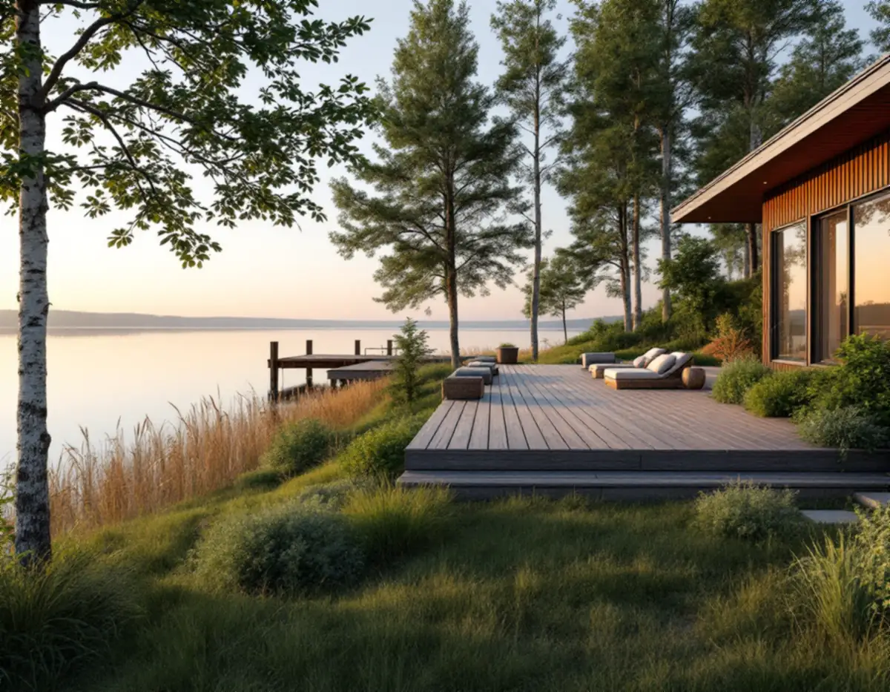
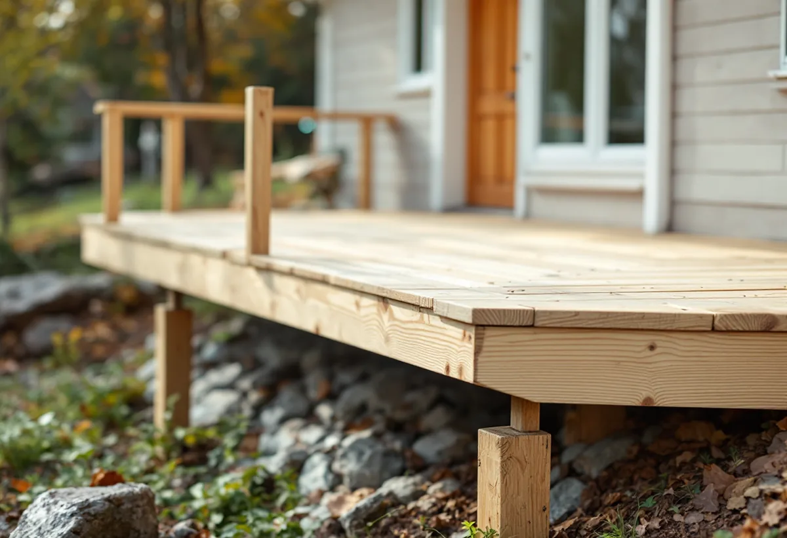

Detaljplan och strandskydd
Vi läser planen för fastigheten och ser om strandskyddet är upphävt eller om dispens behövs.
Som snickare i Sollentuna bygger man ofta utomhus: en altan, ett uterum, ett skärmtak över entrén eller en brygga vid vattnet. Kommunen har egna sidor för varje åtgärd, och strandskyddet gör att samma trädäck kan bedömas olika beroende på var tomten ligger. Därför börjar vi med detaljplanen och mäter innan något ritas.

Sollentuna kommun skriver på sin sida om altan att ett vanligt trädäck direkt på marken oftast inte kräver bygglov. Innehåller konstruktionen ett utrymme under altanen kan den i stället bedömas som en tillbyggnad. Inom detaljplan krävs lov om altanen blir högre än 1,8 meter över marken inom 3,6 meter från en byggnad, eller högre än 1,2 meter längre ut.
En lovbefriad altan som tillsammans med tomtens övriga altaner har en yta under 50 kvadratmeter får strida mot detaljplanen. Den får dock inte placeras eller utformas så att trafiksäkerheten påverkas.
På en sluttande tomt blir altanen lätt hög på baksidan även när den är låg vid husväggen. Vi mäter därför höjden både vid huset och vid ytterkanten innan vi föreslår ett utförande, och vi räknar med att ett förråd under altanen kan göra den till en tillbyggnad.

Med tillbyggnad menar kommunen alla åtgärder som ökar byggnadens volym, oavsett om det sker uppåt, åt sidan eller nedåt. På ett en- eller tvåbostadshus får tillbyggnader göras utan lov upp till sammanlagt 30 kvadratmeter brutto- eller öppenarea, och de får inte bli högre än husets taknock. De tidigare undantagen för attefallstillbyggnad, takkupor och skärmtak har tagits bort, men det som byggts med stöd av dem räknas in i de 30 kvadratmetrarna. Lovbefriade tillbyggnader får strida mot gällande detaljplan.
För radhus, kedjehus och andra sammanbyggda småhus skriver kommunen att möjligheterna varierar med hur bebyggelsen är utformad, och hänvisar till Kontaktcenter. En anmälan krävs om tillbyggnaden påverkar bärande konstruktion eller brandskyddet, till exempel skyddet mot brandspridning till andra byggnader. Det kan bli aktuellt i en radhuslänga.
Inför en större utbyggnad finns mer om planering och ytor på sidan om tillbyggnad.
Inom kulturhistoriskt särskilt värdefulla områden går de bygglovsbefriade åtgärderna inte att använda, enligt kommunens sida om kulturhistoriska byggnader och områden. I kartan med gällande detaljplaner finns ett lager med kulturmiljöplanen, men kommunen påpekar att en byggnad kan vara särskilt värdefull även om den inte finns med där.
Är man osäker kan man be kommunen om en bedömning. Den vill då ha adress eller fastighetsbeteckning, foton på huset från samtliga väderstreck och en beskrivning av det man vill göra. Den som vill vara säker på att en lovfri åtgärd uppfyller lagens krav kan också söka ett frivilligt bygglov.
Krävs bygglov för altanen anger kommunen en handläggningstid på ungefär 4–10 veckor. Ansökan görs via e-tjänst och ska innehålla situationsplan och plan-, fasad- och sektionsritningar.
Inom strandskyddat område krävs dispens för att bygga nytt, ändra byggnader eller deras användning, utöka den privata hemfridszonen, gräva inför ett bygge och sätta upp bryggor. På sidan om strandskydd skriver kommunen att den är mycket restriktiv till nya bryggor och att en befintlig brygga ska byggas om varsamt och inte bli större än den som finns. Arbete i vatten kräver dessutom tillstånd för vattenverksamhet hos länsstyrelsen.
Dispens behövs inte om strandskyddet är upphävt i detaljplanen. Beviljas dispens granskar länsstyrelsen beslutet inom högst tre veckor, och arbetet bör inte påbörjas förrän beslutet har vunnit laga kraft. Kommunen anger en handläggningstid på ungefär 10–52 veckor. Ansökan ska innehålla situationsplan, ritningar, fotografier och en beskrivning av växtlighet, arter och den allemansrättsliga tillgängligheten på platsen.
I granskningsutlåtandet till översiktsplanen skriver kommunen att den generellt vill minska antalet bryggor i Edsviken. Planerar du en brygga är det alltså klokt att utgå från den som redan finns.
Vi läser planen för fastigheten och ser om strandskyddet är upphävt eller om dispens behövs.
Höjder, avstånd till hus och tomtgräns och tidigare lovfria tillbyggnader mäts upp.
Är det oklart om huset är särskilt värdefullt skickas foton och en beskrivning till kommunen först.
Du får ett skriftligt förslag med material, utförande och vad som eventuellt ska sökas.
Plintar, stomme och trall eller väggar byggs i den ordning väder och mark tillåter.
Vi kontrollerar höjder och infästningar och går igenom arbetet med dig.
Skatteverket räknar bygge och reparation av en altan som sitter ihop med huset som rotarbete, liksom inglasning av altanen och en tillbyggnad som byggs ihop med bostaden. Att reparera en båtbrygga ger däremot inget avdrag, och inte heller ett nytt fristående garage.
Du kan få tillbaka 30 procent av arbetskostnaden, med ett tak på 50 000 kr i rotavdrag per person och år och 75 000 kr för rot och rut sammanlagt. Är huset yngre än fem år från värdeåret ger om- och tillbyggnad inget avdrag. Materialet betalas fullt ut, och avdraget görs på fakturan.
Det avgörs främst av storlek, höjd över marken, grundläggning och materialval, och av om bygget kräver lov, anmälan eller strandskyddsdispens. En låg altan på plan mark är enklare än ett högt trädäck i en slänt mot vattnet. Vi kommer ut gratis, mäter och lämnar sedan ett skriftligt kostnadsförslag.
Altan, väggar, dörrar och inredning.
Snickare i Stockholm →Takbyte, takbesiktning och plåtarbeten.
Takläggare i Sollentuna →Norrviken, Tureberg och Edsberg.
Takrenovering i Sollentuna →Villastad och radhuslängor.
Målare i Sollentuna →Ventilation och stammar.
Badrumsrenovering i Sollentuna →Panel, puts och isolering.
Fasadrenovering i Sollentuna →Buller, ljudglas och radhus i Sollentuna.
Fönsterbyte i Sollentuna →Radhus i Sjöberg och villor nära stationerna.
Golvläggare i Sollentuna →Villastad och radhuslängor.
Köksrenovering i Sollentuna →Radhusplåt, bleck och rännor i Sollentuna.
Plåtslagare i Sollentuna →Ansökan, solceller och radhus.
Takbyte i Sollentuna →